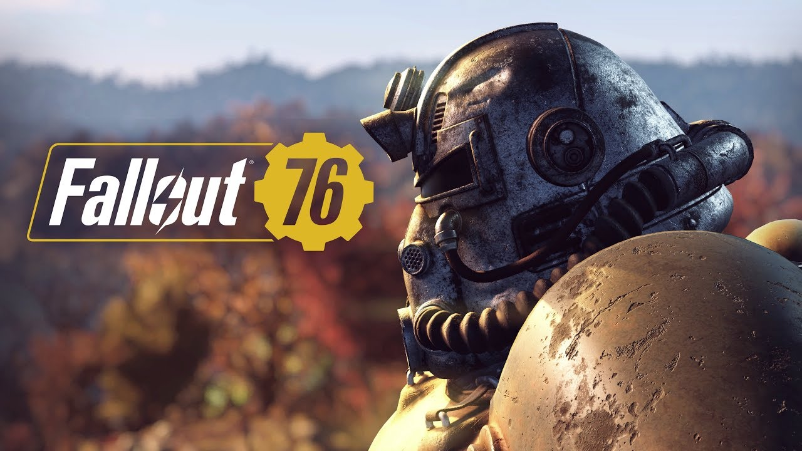

Games that I have worked on
Developing games has been a long journey for me as I have collabrted with many companies to make multiple different games. <
- Dark souls 3
- Black ops 3
- Destiny 2
- Elder scrolls online
- Fallout 76
DS3

Dark souls 3 is what really started my love for devloping games because the level design was so unique. The stories created through lore have really carried many of the levels and the bosses. The music also plays a big part in this game but this was the game that changed my view on RPGs and it has infact changed my life!
Black ops 3

Black ops 3 was the first FPS video game I have ever worked on. The Idea of the game started as a multiplayer experence that stayed true to call of duty and that is excatly what it came out to be. Every mode in the game was playable online with friends. Campaign , Multiplyer , Zombies and even Nightmare mode which served as the Campaign but instead all the enimes were zombies. It was the most innovative call of duty to date!
Destiny 2

Destiny 2 was the first live-service model game I've worked. Destiny is a looter shooter mixed it with RPG elements and is also considered to be an MMO lite.
The Elder Scrolls Online

Elder scrolls online is an amazing MMORPG that I worked on and is a game that millions of people still play today. The intention of the game was for people who loved the elder scrolls series and MMO enjoyers. We used insipration from World of warcraft when making the game as WOW was the best MMORPG out at the time of development. This game come with many aspects and content for anyone to enjoy. Solo players , casuals , hardcore players and even people that just wanna decorate homes have a place in the elder scrolls online.
Fallout 76
Fallout 76 is a game that has come so far from what it was. We just wanted to make a multiplayer fallout game since many have requested it and figured out a way to make it work.